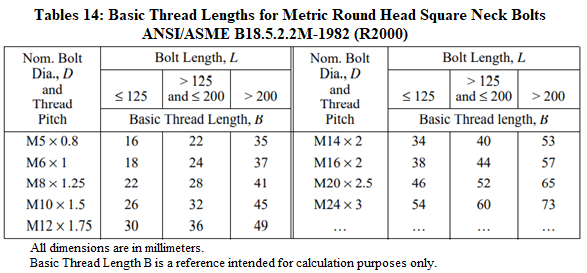
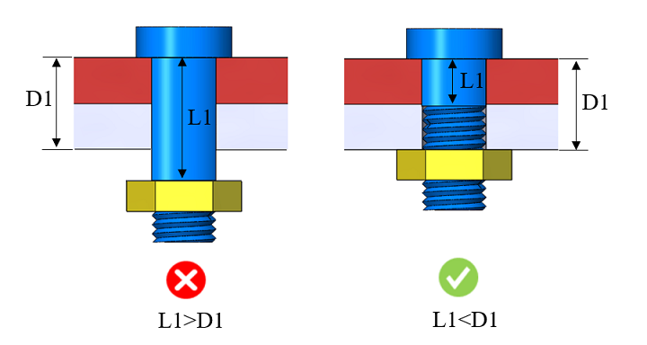
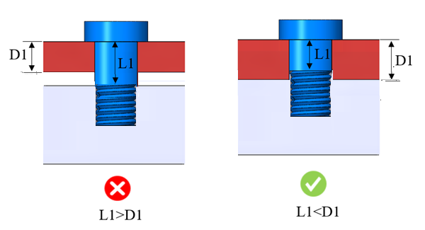

ボルト締結されたアセンブリでは、適切なねじ結合を実現するために、完全に締め付けた際にナットがプレート表面に確実に接触している必要があります。本ルールでは、ねじ部がプレート表面の直後、またはプレート内部から始まっているかどうかを識別することで、この条件をチェックします。
ボルト／ねじによる締結では、正しいねじ長さを持つ適切なボルトを選定することが常に推奨されます。具体的には、下側プレートにクリアランス穴がある場合、その直後、またはプレート内部からねじが開始されている必要があります。この条件が満たされない場合、ナットは下側プレートの面に対して完全に締結されず、結果としてボルト締結部が緩んだ状態になります。
一般的なガイドラインとして、組立条件および組み付けるプレートの枚数に基づき、ナットが下側プレートに対して完全に締結されることを確実にするため、適切なねじ長さを持つ締結部品を使用することが推奨されます。
ボルトねじ長さ = *最小ねじ長さの計算式 ― インチ単位
ボルト長さが 6 インチ以下の場合 ― 呼び径の 2 倍 ＋ 1/4 インチ（2D + 1/4"）
ボルト長さが 6 インチを超える場合 ― 呼び径の 2 倍 ＋ 1/2 インチ（2D + 1/2"）
ボルトねじ長さ = *最小ねじ長さの計算式 ― メートル単位
ボルト長さ <= 125 mm：呼び径の 2 倍 ＋ 6 mm（2D + 6）
ボルト長さ > 125 mm かつ <= 200 mm：呼び径の 2 倍 ＋ 12 mm（2D + 12）
ボルト長さ > 200 mm：呼び径の 2 倍 ＋ 25 mm（2D + 25）
シャンク長さ = ボルト全長 − ねじ長さ

貫通穴

止まり穴

L1 = ボルトのシャンク長さ
D1 = クリアランス穴の総深さ
注記:
本ルールは、スロット形状のケースには対応していません。
本ルールは、トップレベルのアセンブリ部品に対して、DFMPro 設定に基づいて実行できます。
本チェックを正しく実行するためには、アセンブリ内のボルトを特定するために、ハードウェア名およびハードウェアタイプの情報を必ず入力する必要があります。ハードウェアの設定については、ハードウェアデータベースを参照してください。